AtomRec：把协同记忆变成可修订的原子证据
论文：AtomRec: Evolving Atomic Memory for Agentic Recommendation。作者包括 Peiyu Hu、Weihai Lu、Siying Gu、Zhuodong Liu、Zhaokai Luo、Yuean Niu、Zhiyong Wang、Jia Wang。第一作者主要署名西交利物浦大学，同时署名小红书；合作机构还包括北京大学、华东师范大学和北京交通大学。arXiv 首次公开：2026-09-04；笔记日期：2026-09-07。论文入口。本轮未核验到本文独立代码或项目页。以下实验数字来自论文，未独立复现。
AtomRec 把用户和物品的记忆拆成带字段的笔记，允许新行为修改相关历史字段，再沿语义关系检索可解释的协同证据。它改动的是推荐智能体的外部记忆组织，没有提出新的端到端推荐训练损失。
现有记忆机制常把用户与物品信息压缩成粗粒度摘要，并用标量协同关系连接；当兴趣不断变化时，这使系统难以保留细粒度的偏好阶段，也难以检索能解释推荐理由的关联证据。
1. 背景和问题
1.1 兴趣变化为什么不能只靠重写摘要
推荐智能体通常把用户行为翻译成一段可供大模型阅读的记忆：喜欢哪些主题、最近在看什么、关注什么属性。这个接口比直接展示大量交互记录简洁，也使语言模型能处理自然语言请求，但摘要会把不同时间形成的偏好压在同一块文本里。一个人先关注太空探索，再关注硬科幻生存，后来转向赛博朋克，并不意味着前两段经历失效。后一次行为可能扩展兴趣，也可能只是临时探索。如果每次都重写“用户喜欢某类科幻”，下游看到的是新的中心主题，难以分辨哪些证据被保留、哪些被替换以及替换的依据是什么。
这里有两个不同的问题。第一个是表示粒度：当几个兴趣都住在同一条摘要里，要修订一个属性，很容易连带改变其他信息。第二个是关系语义：即便系统有用户—物品图或相似用户关系，一个数值权重主要告诉模型“关联强不强”，未必告诉它“为什么关联”。两个用户都读科幻可能因为作者相同，也可能因为科学设定、社会批判或视觉风格相同；这几种理由对下一本书的排序并不等价。AtomRec 因而要求记忆既能定位到可操作字段，也能通过关系说明向下游提供证据，收益不应只依赖扩大上下文长度。
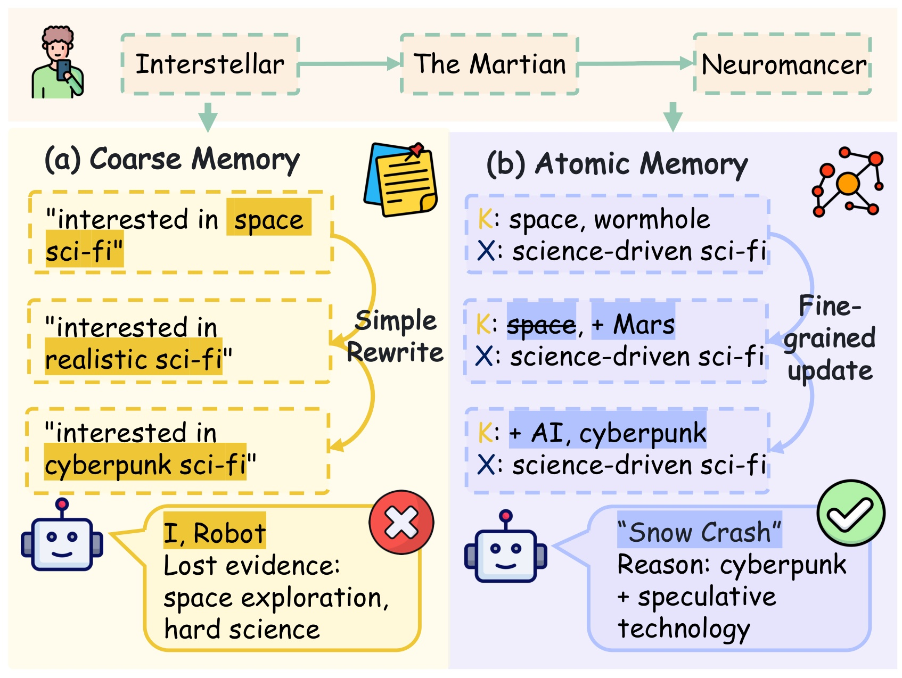
Figure 1 按同一条用户经历对照两种更新方式，上方依次是《星际穿越》《火星救援》和《神经漫游者》。左侧不断把整段偏好替换成新的宽泛描述，最后留下“赛博朋克科幻”这一中心，图中用丢失太空探索、硬科学证据说明问题。右侧把关键词与上下文分开管理，新的火星、人工智能、赛博朋克线索能在相对稳定的科学驱动语境中演进。下方两本推荐书只是作者用来说明证据差异的动机案例，不是离线实验准确率；不能据此说所有粗摘要系统都会推荐错误，也不能把图中绿色勾号当成用户满意度。图示的实际启发是检查“新增偏好是否让原证据不可寻址”，不能把字段越多当成越好。值得特别观察的是，原子字段同样允许删除或替换关键词；因此它并不天然提供不可变历史，可靠性仍取决于修订规则、版本保存和后续检索是否真正使用旧线索。
1.2 从实体画像到可操作的协同证据
论文讨论的基线不止普通协同过滤。LightGCN 通过交互图学习向量，SASRec 通过序列隐藏状态编码历史；两者主要把规律存在参数和向量里。语言模型推荐可以直接读历史，也可以通过智能体维护用户画像、调用工具和吸收邻居信息。与 AtomRec 最接近的 MemRec 已经有动态协同记忆图，因此本文不能被概括为“第一次给推荐加入记忆”。它的增量是把粗实体记忆拆成字段化原子，并把链接构建、历史修订和多跳读取连接起来；比较时应优先问原子结构是否超过已有协同记忆，不能只对照没有记忆的弱模型。
“原子”在本文并不等于数据库中的最小不可分事实。一个笔记仍包含内容摘要、关键词、标签、上下文、向量和链接，字段之间也未被证明完全解耦。它更接近可单独检索、可单独修改的一小块偏好证据。这个定义有工程上的实质：如果只想修订“当前偏好从悲伤疗愈延伸到来世证据”，系统可以改相关笔记的语境和关系，无需重新生成整个用户档案。但它也留下复杂性：同一线索可能同时进入内容、关键词与标签，更新不同步会产生矛盾；一个错误的语义概括还可能通过链接传播给其他记忆。
协同关系在这里也改变了职责。传统相似度可以作为召回候选，AtomRec 先用向量相似度找附近的笔记，再让记忆智能体判断它们是共享主题、互补偏好、意图推进还是跨领域迁移。相似度筛选控制计算范围，语言判断提供关系解释，二者不能互相替代。若近邻阶段根本没有找到真正有用的远距离证据，后面的关系判断没有机会补救；若大模型给表面相似的内容编出漂亮理由，生成的解释又不代表关系真实。论文的组件消融和链接质量分析正是围绕这两个环节展开。
1.3 任务边界决定证据能支持什么
本文评测对象是带自然语言指令的候选排序。给定用户已有行为、当前请求以及十个或二十个候选，系统输出候选相关性分数或排序。它不是从几十万物品库里直接生成最终结果，也没有展示真实在线探索策略。数据集中存在十二万量级物品，不意味着每次推理就对十二万物品做了完整排序；主表高命中率是在十候选条件下取得的。理解这一点，才能把论文与工业召回、粗排、精排、重排的不同环节对齐，避免把局部重排收益扩写为全链路业务提升。
时间边界比一般静态推荐更重要。因为新交互可以回头修订旧笔记，单看笔记保存的最早时间无法判断其文本在预测时是否已经可见。原文声明对每个目标时刻构建严格的预测前快照，目标物品只作为最终排序候选，不能用于同一测试实例的记忆更新。这个声明给出了正确的设计方向，但需要真实事件和修订版本证明。正文案例图与附录提示模板存在需要核验的歧义，后文会把它们单列，不会根据形式化声明直接判定无泄漏，也不会根据一张图直接指控实验泄漏。
对于推荐研究者，最有价值的观察点是兴趣漂移、稀疏协同与证据可追溯性之间的关系。对于大模型研究者，它提供了一个外部记忆系统实例：写入、链接、演化、读取分别调用模型，性能提升来自这些操作的组合。迁移到个人助手或长期任务智能体时，可以借鉴字段级修订和关系检索，但不能照搬推荐指标来衡量任务完成率。本文使用两个逻辑角色并不代表训练了两套模型；主实验的记忆代理和推荐代理都由同一个轻量闭源模型承担，区别主要在输入、提示、输出结构和调用时机。
2. 方法
2.1 原子协同记忆构建
每个新观察到的预测前交互最多创建一个用户侧笔记；若物品尚无记忆，还可创建一个物品侧笔记。两类笔记进入同一记忆空间。用户笔记以用户角度表达本次交互证据，物品笔记使用可得元信息与交互语境；创建操作本身不覆盖既有笔记。历史修订被交给后续演化模块，因而“追加一条新笔记”和“改动旧笔记”在流程上是两种动作。原文的字段集合与嵌入定义可合写为：
符号解释：$m_u^t$ 是用户 $u$ 在当前状态下的原子笔记；$c$ 是内容，$t_u$ 是原始时间戳，$K$ 是关键词集合，$G$ 是语义标签，$X$ 是简短上下文，$e$ 是向量，$L$ 是关联笔记标识集合。$f_{\mathrm{enc}}$ 是冻结的 Sentence-T5 文本编码器，$\operatorname{concat}$ 拼接四种文本字段；附录说明向量还会作二范数归一化。物品笔记采用相同结构。时间和链接不直接放入此嵌入式，因此时间约束需要外部快照控制，不能希望余弦相似度自动识别未来信息。
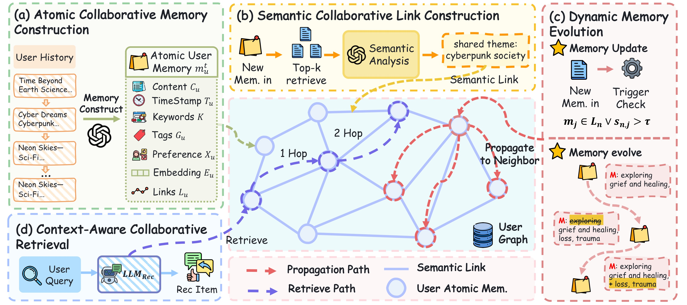
Figure 2 把原子构建、语义链接、动态演化和上下文协同检索放在同一张信息流图里。左上首先把历史变成字段化用户记忆，中央不同颜色节点表示用户与物品原子，语义边让它们进入同一协同空间；右侧的新记忆触发检查决定是否影响历史邻居，左下则从用户请求发起检索，把一跳、两跳路径交给推荐代理。图中检索路径与传播路径的线型不同，说明读取证据和修改记忆是两个操作，不能把一次检索误认为模型训练。蓝色结构也不是通过推荐损失端到端学习的图神经网络：关系判断与证据合成都由提示驱动的大模型完成。部署时必须确定这些操作谁同步执行、谁在交互后异步执行，否则同一个“四模块”图可能对应完全不同的延迟。本文的结构优势在于能够明确指出推荐依据来自哪条记忆及哪段关系；但这种潜在可解释性只有在链接标识、修订来源和检索路径实际保留时才成立，附录的失败案例表明这些记录并非始终完整。
这种结构把可读文本和可检索向量并存，方便模型解释和系统搜索。关键词表达局部主题，标签提供分类视角，上下文承载当前意图，但这些字段并没有互斥约束。不能把字段化等同于事实已经原子化、归因已经可靠。如果内容被改写而向量没有重算，旧索引会指向新语义；如果多个字段重复放大同一主题，检索会越来越偏向主导兴趣。论文通过字段消融验证这些表示有用，却没有给出字段一致性的形式化保证。
2.2 语义协同链接构建
插入新笔记后，先用向量筛选可比较的历史对象，再使用记忆代理生成链接。对应原文未编号公式为：
符号解释：$n$ 是新笔记，$j$ 是已有笔记，$s_{n,j}$ 为余弦相似度，$\mathcal M$ 为可见的记忆空间；$\operatorname{TopK}$ 返回分数最高的候选，默认链接候选数为二十。$\mathrm{LM}_{\mathrm{Mem}}$ 是记忆代理，$P_{\mathrm{link}}$ 是链接提示，$\Vert$ 表示组合输入。输出 $L_n$ 保存被选中的笔记标识，并可附上关系解释。公式中的相似度只负责预筛，最终保留哪些边还由语言模型做语义判断。
提示要求从共享主题、互补偏好、意图推进和跨域迁移等角度选择关系，并排除表面相似。它输出结构化 JSON 的标识和理由，供后续演化与多跳读取使用。关系说明是给模型阅读的文本证据，不是被训练出来的可校准边权。即便提示里出现因果或意图推进这样的词，也不能把生成的关系当成因果识别结果。该方法的实际可检验主张是：在相同邻居检索基础上，语义筛选是否能比单纯相似度链接给出更有用的证据，主文嵌入链接消融与附录三百条链接审计对此提供了不同层面的证据。
这一模块发生在记忆构建过程中，推荐时读到的是此前建立的图。默认记忆代理为 gpt-4o-mini，解码温度为零；论文没有在这些链接上训练额外的编码器或关系网络。候选规模是成本与覆盖的直接控制项：太小会漏掉有用关联，太大会扩大提示输入并引入弱关系。原文选择二十是验证集的经验选择，不能作为所有用户历史长度下的固定最优值。
2.3 动态记忆演化
新证据不仅可被追加，也可触发相关旧笔记的定向修订。原文在近邻候选上使用一个或条件：
符号解释：$\mathbb I$ 为指示函数，$\lor$ 为逻辑或，$\tau_{\mathrm{evo}}$ 是演化阈值，默认零点七。被新笔记链接，或余弦相似度超过阈值，都可以触发检查；$P_{\mathrm{evolve}}$ 要求在保留原语义前提下修订，$m_j^*$ 是输出的新版本。触发不等于必须采纳任何生成内容：附录提示允许返回无需更新；无效或不受支持的更新则保持旧状态。
符号解释：星号表示可被修订的内容、关键词、标签、语境、向量与链接，$t_j$ 没有星号，表示保存原始时间位置。更新后需要重新计算 $e_j^*$。这个表达式强调字段层面的可变性，而不意味着各字段都必须改变。它也说明文本内容本身可以改写，不能把原子笔记理解为只增不改的事实日志。
保留原时间戳是为了不把旧事件伪装成新发生的交互，但也带来一个关键实现风险：旧时间戳下可能已经装入后来才观察到的语义。离线回放必须同时控制事件发生时间与修订可见时间；只按原时间戳过滤，不能保证没有未来信息。正文与附录 G 明确要求每次预测只使用目标之前的构建、链接和演化状态。一个可复现实现应保留修订序号、触发事件、输入笔记版本和可见截止点，不能只导出最后一份记忆再按时间过滤。这里的版本建议是笔记的工程推论，论文没有提供完整的版本数据库设计。
2.4 上下文感知协同检索与推荐
读取阶段首先用用户指令、近期交互与预测前字段构造查询，再取相关笔记并沿边扩展。初始集合和一跳形式为：
符号解释：$q_u^t$ 是同一编码器生成的查询向量，$\mathcal M_0^t$ 是初始相关记忆集合，$L_i$ 为笔记的链接，$\mathcal G_{\mathrm{sub}}^t$ 表示用于合成证据的子图。公式展示一跳并集，实际默认最多扩展两跳。检索候选数在敏感性实验中以十五最好，它与构建链接时的二十是不同超参数，不能混写为唯一的 top-k。
符号解释：$P_{\mathrm{synth}}$ 指导记忆代理把图压缩成协同摘要、偏好侧面与证据路径；$M_u^t$ 是用户记忆，$M_i^t$ 是候选物品记忆，$C_u^t$ 是候选集合，$P_{\mathrm{rank}}$ 携带排序指令与当前请求，$r_{u,i}^t$ 为推荐代理输出的相关性分数。问题定义中显式给出的自然语言指令，在最终提示中作为当前请求输入；它不是额外监督标签。
推荐代理收到所有候选后输出带理由的 JSON 分数，按分数排序。若只有合法顺序但没有数值，可以把顺序转换成评价所需分数；格式错误会追加一次更严格的格式提示重试，再失败则丢弃无效排序响应。这里需要报告失败比例以及如何计入分母，否则忽略困难实例可能影响评价。本文给出了兜底流程，却没有展示完整失败率，因此不能把“有解析重试”写成“所有样本都稳定成功”。整个记忆系统主要通过提示执行，未训练新的端到端损失；初始化和持续写入可离线或异步完成，最终查询、子图合成与候选评分仍有在线调用。缓存能转移部分成本，但不等于消除了时延。
3. 实验结果
3.1 数据、候选规模与主结果
四个数据集沿用 MemRec 的预处理表示与训练、验证、测试切分，来源于指令增强推荐设定。附录 Table 3 给出 Books 的用户数、物品数、交互数分别为七千四百、十二万零九百、二十万七千八百，平均历史长度二十八点二；Goodreads 为一万一千七百、五万七千四百、六十一万八千三百，平均五十二点七；MovieTV 为五千六百、二万九千、七万九千七百，平均十四点一；Yelp 为三千、三万一千六百、六万三千一百，平均二十一点四。这些是数据集规模，不是每项实验测试实例数。主结果用完整测试集，消融与分析使用各方法一致的随机一千用户子集；因此不能把分析子集的一千当作主表分母。
默认每个测试实例只有十个候选，报告前三和前五命中率以及归一化折损累计增益，原文缩写为 H@3、H@5、N@3、N@5。命中率看目标是否进入前若干位，NDCG 进一步奖励靠前位置。所有基线覆盖传统推荐、语言模型直接排序及记忆代理方法，重点对照 MemRec；主模型两种代理均用 gpt-4o-mini，文本编码器冻结。表中显著性来自配对 bootstrap，阈值小于零点零五；没有展示每列置信区间，因此可引用“作者报告显著”，不能补造误差范围。
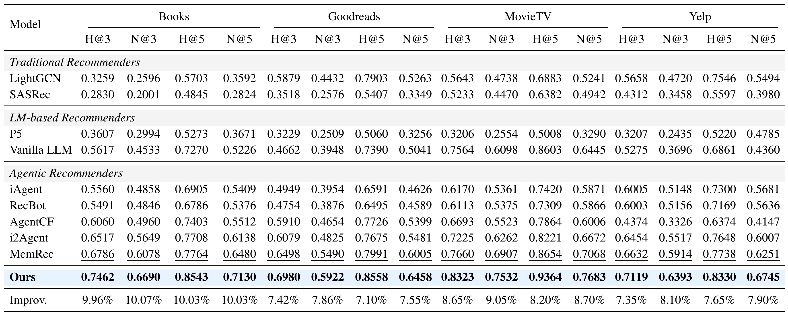
Table 1 横向分为四个数据集，每组四列指标，纵向按模型类型分组，底部相对提升以该列最强基线为分母。Books 的 N@5 从 MemRec 的零点六四八零上升到零点七一三零，差值零点零六五零，相对提升约百分之十点零三；Goodreads 为零点六零零五到零点六四五八，相对百分之七点五五；MovieTV 为零点七零六八到零点七六八三，相对百分之八点七零；Yelp 为零点六二五一到零点六七四五，相对百分之七点九零。十六个相对增益的算术平均约百分之八点四八，与摘要“约百分之八点五”一致。这个平均跨越不同数据集和不同指标，既不是总体流量加权效果，也不是统一提升八点五个百分点。 四域全部优于 MemRec 比只赢弱基线更有说服力，但数据源和指令构造仍共享评测传统，不能直接推出任意推荐场景都成立。Books 收益较大与内容偏好可文字化这一机制相容；这属于结合数据特征的解释，不是证明稀疏度是收益的唯一原因。
3.2 消融、链接质量与演化审计
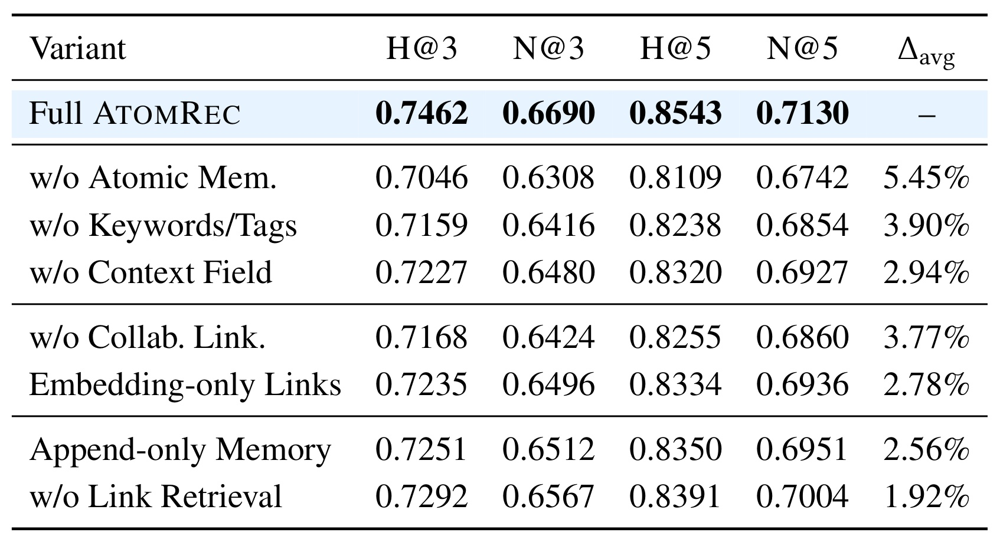
Table 2 以完整 AtomRec 为参照，最后一列是四指标平均相对下降。把原子表示退回粗摘要下降百分之五点四五，去掉关键词和标签下降百分之三点九零，去掉上下文下降百分之二点九四，说明字段化整体以及具体语义视角都提供了增量。取消协同链接下降百分之三点七七，仅用嵌入近邻代替语义链接下降百分之二点七八，支持“邻近不等于有用关系”的设计。只追加、不演化下降百分之二点五六，取消链接感知检索下降百分之一点九二，说明更新和读取同样参与收益。各消融不是互相正交的效应分解，不能把这些下降相加得到总贡献；移除一个环节还可能改变后续输入分布。附录 Table 6 在 Goodreads 给出相同方向，原子表示下降百分之五点二四，追加模式下降百分之二，说明趋势不限于 Books。不过这些分析用子集，表中完整模型数值与全测试主表恰好一致，原文未进一步解释汇总关系，复现时应保留实际样本名单确认。
附录还提供两类自动审计。三百条 Books 语义链接由 gpt-4o 按一到五分评价，相关性、关系正确性、推荐有用性分别从嵌入链接的三点七二、三点四一、三点二八提高到四点三一、四点零八、三点九六。演化笔记的语义保持、证据支持、有用性分别为四点二七、四点零五、三点九一。这些是自动裁判平均分，不能换算成“百分之八十正确率”；裁判与生成模型同属语言模型，可能共享偏好与盲点，也没有人工一致性标定。排名消融比这类内部审计更接近任务结果，内部审计则有助于定位为什么某个模块可能有效，两者作用不同。
3.3 超参数与偏好漂移
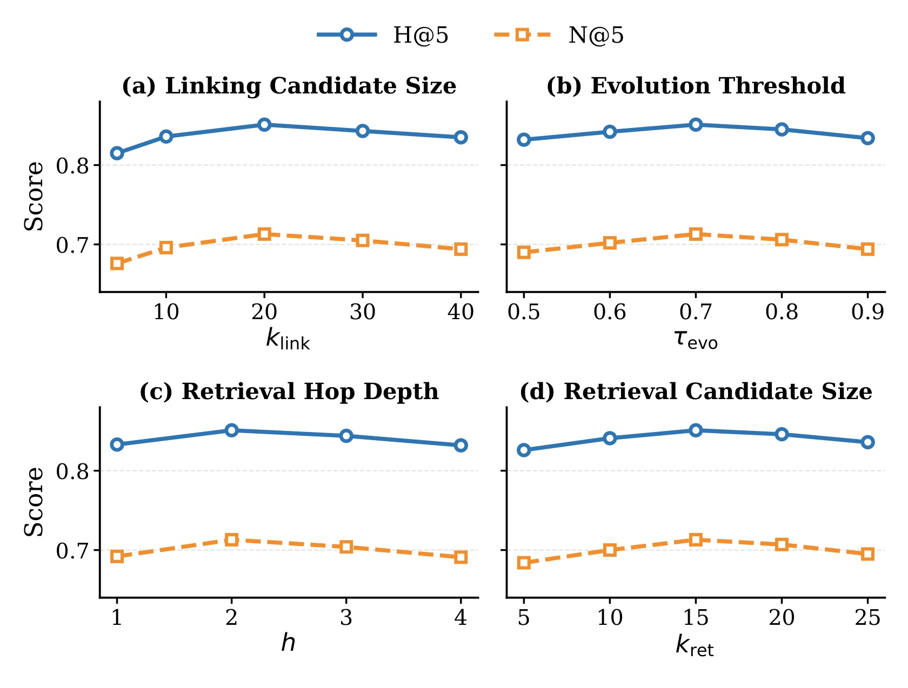
Figure 3 四个子图分别改变链接候选数、演化阈值、检索跳数和读取候选数，蓝线与橙线分别是 H@5 与 N@5。最好设定是链接候选二十、阈值零点七、两跳与读取候选十五。向量候选太少会限制可链接证据，太多则引入弱关系；阈值太低允许无关近邻频繁触发修订，太高又可能漏掉有益更新；跳数继续增加并未持续改善，说明远处协同证据可能稀释当前意图。图展示的是 Books 上有限离散取值的经验曲线，不是普适最优点。它没有给出误差带，邻近取值间较小差异不宜过度解释。真正可迁移的是控制扩展规模、更新频率和证据预算这三个独立约束，不能把一个超参数配置写死到所有用户。冷启动用户与长历史用户是否需要不同阈值，本图没有回答。
符号解释：$d_u$ 为偏好漂移分数，$\bar e_u^{\mathrm{early}}$ 和 $\bar e_u^{\mathrm{late}}$ 分别是早期、晚期历史物品向量的均值，余弦越低代表两个阶段语义方向差异越大。作者据此将用户分为低、中、高漂移组。这是嵌入空间中的代理度量，不等于用户主观兴趣变化的直接观测。
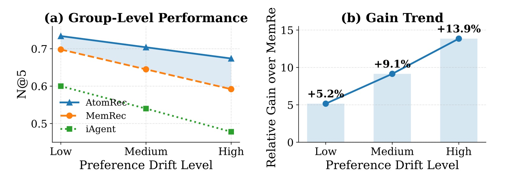
Figure 4 左侧报告不同漂移组的 N@5，三种方法都会随漂移加大而下降；右侧给出 AtomRec 相对 MemRec 的增益，从低漂移的百分之五点二增至中漂移的百分之九点一、高漂移的百分之十三点九。这个方向与动态字段修订的目标一致：当新旧兴趣存在分歧时，避免用一次摘要覆盖所有阶段更可能有价值。但图不能说明 AtomRec 完全解决了漂移，因为高漂移组的绝对分数仍更低。分组阈值、各组样本数和置信区间没有在图中给全，因此不应把右侧趋势当作连续剂量反应或因果结论。右图纵轴的英文末端在原图已截短，笔记保留原对象、不擅自补画，轴含义依据 caption 与正文确定为相对 MemRec 的增益。进一步复现应固定分组依据和同一用户集合，避免不同方法因为无效输出过滤而比较不同人群。
3.4 案例给出的机制和反证
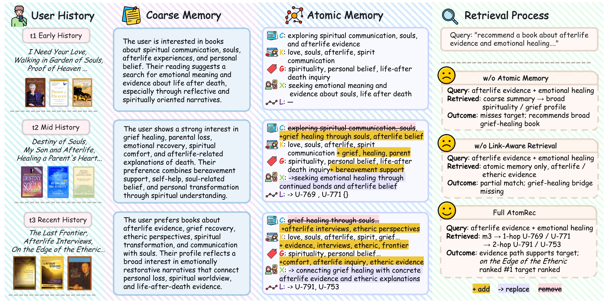
Figure 5 左边按早、中、近期呈现阅读历史，中间对比粗摘要整体改写与原子字段添加、替换，右边对比无原子记忆、无链接读取及完整系统的检索结果。作者想证明的是：悲伤疗愈与来世证据不是互相覆盖的两种偏好，经过一跳和两跳链接可以组合成更具体的排序理由。完整路径把目标排第一，而粗摘要容易停留在宽泛的灵性或疗愈主题。不过原图把 On the Edge of the Etheric 同时列入“近期历史”，右侧又称其为目标，这与严格预测前状态的叙述至少存在图示歧义。仅凭图无法判定实际测试泄漏，也不能忽略这个问题；需要作者给出该实例目标时点、用于建图的事件清单和快照版本。图是一个选定案例，没有代表性频率，且附录 L 明确列出同名目标排第三的困难情形，因此不应只摘取“目标第一”来概括所有用户。
附录失败案例更能暴露方法边界。用户六七一一的记忆虽然正确抓到悲伤、疗愈和来世主题，却过度集中于失去孩子的支持材料，目标因此只排第三。用户五三五六长期阅读佛教、心理与自我成长内容，突然选择迈克尔·杰克逊服饰主题，系统仍按长期偏好排序，目标也排第三。第三个例子中，目标与韧性、自我发现及人生转变的主导兴趣吻合，才能排到第一。原子化允许细粒度操作，却不会自动判断哪次行为是稳定演进、哪次只是探索。另有案例最终链接为空，但旧协同信息已吸收入文本字段，说明“语义记住了”与“证据路径保住了”并非同一件事。
3.5 成本、候选扩展与预算对照
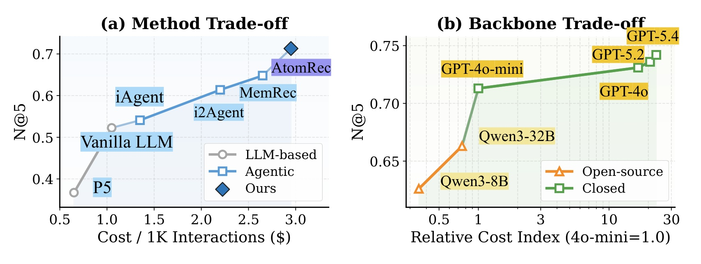
Figure 6 左图把每千次交互的估计成本与 Books N@5 放在一起，AtomRec 高于 MemRec，同时也消耗更多成本；右图改换骨干，并以 gpt-4o-mini 成本归一。轻量默认骨干的 N@5 为零点七一三，Qwen3-8B 与三十二 B 对应零点六二六与零点六六三；更强闭源骨干可以继续提高分数，但成本指数增幅远高于精度增幅。附录 Table 13 给出的十六点七、二十点六、二十三倍是作者部署条件下的相对成本估计，不是本文核验的当前服务价格，也不能直接用于真实采购预算。右图横轴采用压缩的刻度呈现很大成本跨度，阅读时应看标签数值，避免凭视觉距离判断线性性。该图支持“先优化记忆再盲目加大骨干值得研究”，但并未隔离各模型指令能力、解析稳定性和缓存机制的影响，更没有展示开放骨干在同成本下是否能复现完整优势。
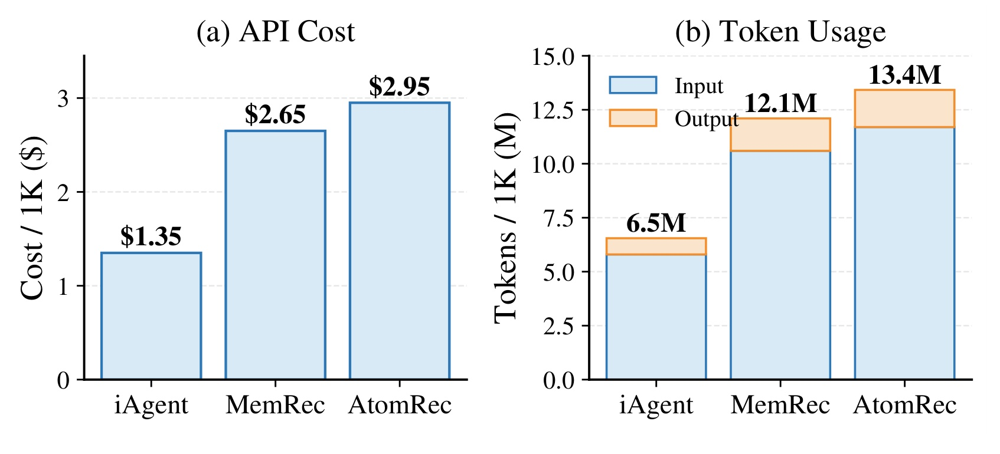
Figure 7 把两类成本分别可视化：左边是估计 API 费用，iAgent、MemRec、AtomRec 依次为一点三五、二点六五、二点九五美元；右边是输入与输出堆叠 token，总量分别为六百五十万、一千二百一十万和一千三百四十万。AtomRec 相对 MemRec 的总 token 增加约百分之十点七四，费用增加约百分之十一点三二。作者将额外调用归因于构建、链接、演化和证据合成，并指出这些记忆侧步骤可以缓存和异步化。这里测的是累计调用资源，不是用户请求的端到端延迟；缓存是否命中、更新是否积压以及两跳合成是否阻塞返回，都没有从柱状图中得到答案。不能把“可异步”直接改写成“已证明线上低时延”。实际资源选择应同时比较排序质量、写入开销与响应分位数，不能只看单个平均成本。
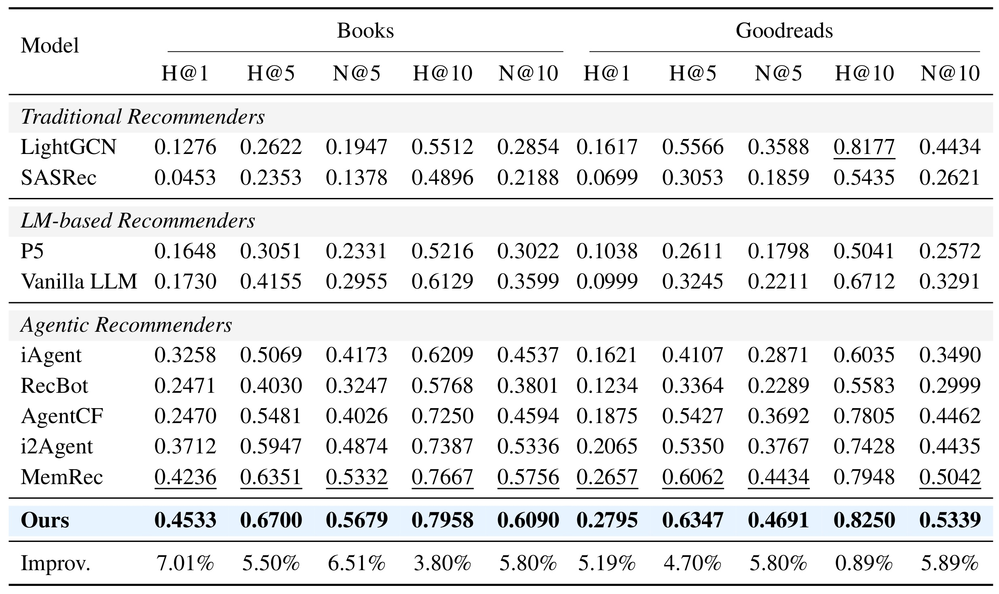
Table 4 把候选数扩展到二十，并加入 H@1、H@10 和 N@10。Books 的 N@5 从 MemRec 零点五三三二升至零点五六七九，相对增幅约百分之六点五一，低于十候选时约百分之十的增幅；这说明更难候选集下优势仍在，但强度会变化。Goodreads 的 H@10 最强基线实际是 LightGCN 的零点八一七七，不是 MemRec 的零点七九四八，因此 AtomRec 零点八二五零对应的最佳基线相对提升只有百分之零点八九。这个例子提醒读者逐列确认分母，不能统一默认 MemRec 是所有设置的第二名。表中不同候选规模属于不同排序难度，H@5 的数值不能直接横比成同一任务上的退化百分比。需要固定候选采样与目标事件才能评估随候选规模变化的鲁棒性；本文没有覆盖全库或千级候选。
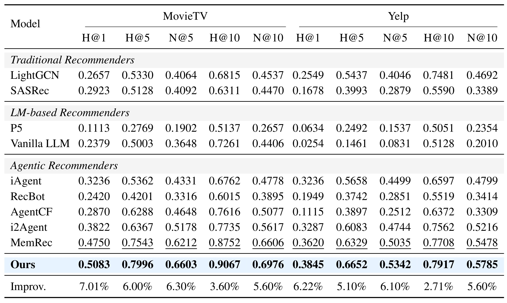
Table 5 在另两个域重复更大候选集合的比较。MovieTV 的 N@5 从零点六二一二到零点六六零三，相对提高百分之六点三；Yelp 从零点五零三五到零点五三四二，相对提高百分之六点一。MovieTV H@1 从零点四七五零到零点五零八三，说明收益不只发生在前五覆盖，也能提升第一位命中。但四域都只有十或二十候选，不能因为 MovieTV 接近九成的 H@10 就推断系统能大规模精准召回。增加候选后的相对提升普遍较主表收窄，与细粒度区分变难相符，也呼应附录“语义相邻但目标不同”的失败案例。下一步值得构造主题相近、属性冲突的困难负样本，检查多跳证据到底帮助区分，还是只增加一段听起来合理的说明；这些后续实验是本文引出的研究问题，并非作者已经验证的结论。
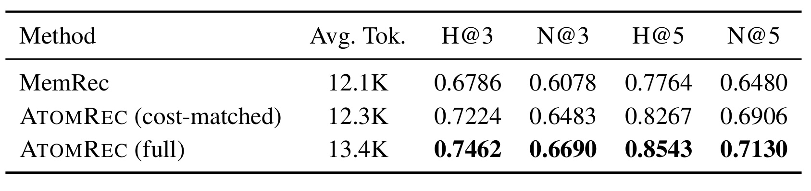
Table 7 是排除“只是上下文更长”的关键补充。MemRec 每交互平均十二点一千 token，限制检索条数和合成证据长度后的 AtomRec 为十二点三千，两者接近但并非完全相等；受限版本 N@5 为零点六九零六，仍高于 MemRec 的零点六四八零，相对约百分之六点五七。完整版本十三点四千 token、N@5 零点七一三零，说明结构与额外预算都可能贡献性能。受限版保留原子构建、语义链接与字段演化，主要压缩最终读取证据，所以这并不是每个调用阶段、每个资源维度都严格一致的公平性证明。表称每交互平均 token，而成本还依赖输入输出比例、价格和缓存；报告应明确是近似 token 匹配。尽管如此，它比仅给总成本与总分的散点更直接支持原子记忆结构具有独立价值，值得作为复现时优先保留的控制实验。
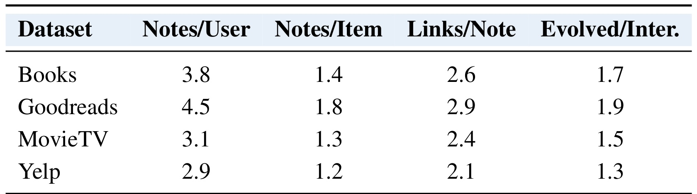
Table 11 按数据集报告每用户笔记数、每物品笔记数、每笔记链接数和每交互演化笔记数。Books 分别为三点八、一点四、二点六、一点七；Goodreads 为四点五、一点八、二点九、一点九；MovieTV 与 Yelp 的数值更低。平均每条新行为影响一到两条历史笔记，配合每节点约两到三条边，表面上说明当前设置比较稀疏。但附录同时说每个交互创建用户笔记，Books 平均历史又有二十八点二条，而这里只剩每用户三点八条；原文没有完整解释统计窗口、合并、删除或聚合口径。物品首次才创建记忆的说法与每物品超过一条的统计也需要对应具体实现。这里应把表视为作者给出的现状摘要，不能据此推导记忆对长期行为总量保持常数规模。容量规划需要逐时间增长曲线、保留策略、更新日志和高分位节点度，而不仅是一次平均值。
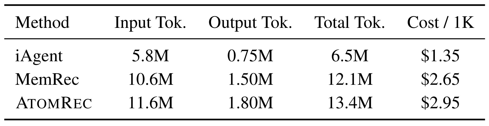
Table 12 把 Figure 7 的总成本进一步拆开：AtomRec 每千交互输入一千一百六十万、输出一百八十万 token，MemRec 分别是一千零六十万和一百五十万。输出增加百分之二十，高于输入约百分之九点四三的增幅，说明生成字段、关系和合成结果不能只当作一次静态检索开销。iAgent 的输入五百八十万与输出七十五万相加为六百五十五万，而总量列写六百五十万，属于作者以一位小数百万单位取近似的展示，不能强行解释成精确守恒数据。表没有提供 API 重试数、向量索引费用、存储费用与并发队列时间，因此只是模型调用估算，不是完整总拥有成本。正文所说额外在线重排负担有限，最多可由缓存设想与 token 平均量间接支持；附录 M 也明确承认尚未评估在线服务的 p50、p90 延迟和吞吐，这一限制应随主要结果一同保留。
4. 总结
4.1 我的判断与适用场景
AtomRec 值得关注的贡献是把外部记忆作为一套可操作的数据结构：原子字段使局部修订有目标，语义链接使协同关系有解释，多跳读取把关系变成排序证据。它与纯长上下文堆叠的区别有组件消融和近似预算对照支持，四域结果也较一致。对图书、影音、内容兴趣等能清楚表达语义侧面的重排任务，这条路线有可研究价值；对于强实时广告精排或全库召回，本文没有给出足够延迟和规模证据，当前更适合将它当作异步画像生成、解释型重排或低流量原型的参考。
推荐工程里可先把“读证据”和“写画像”拆开。先在固定候选和固定快照上比较粗摘要、原子字段与原子字段加链接，确认收益是否存在；再允许演化，评估是否改善漂移用户。这样能减少一次引入所有模块后难以归因的问题。用于长期大模型助手时，迁移的是字段级修订、关系来源与可回放快照，不是 Books 的命中率。本文的失败案例也提醒我们：一个逻辑连贯的记忆可能压制用户临时探索，解释越流畅并不意味着推荐目标越准确。
4.2 局限、核验与后续跟进
第一，评测主要是十或二十候选的指令重排，候选采样对结果影响很大，尚不能外推全链路推荐和在线业务。第二，时序声明需要代码证据：Figure 5 同名目标进入近期历史，附录 K 的 Stage-R 输入含候选物品并说输出供后续记忆写入，与附录 G 的候选只在最终排序可见存在接口歧义。应检查真实调用时点和候选信息流，不能只靠模板名称做判断。第三，平均记忆量与每交互新增笔记的描述没有完全对齐，长时间增长、删除与合并机制仍不清楚。第四，自动裁判的链接与演化评分缺乏人工标定，显式路径也可能在修订中丢失，无法保证可解释性持续成立。第五，闭源模型版本、格式解析失败后的样本处理和成本条件影响复现，论文没有给出完整失败比例与服务延迟。
建议优先跟进三个验证方向。其一，等待代码或作者补充可回放日志，分别保存事件时间、修订时间、触发证据和目标时间，并检查候选上下文是否进入预测前写入路径；这是判断时序声明能否落地的关键。其二，在严格相同候选集合、有效样本分母和 token 预算下复现 MemRec、原子字段、追加模式和演化模式，进一步报告困难负样本与兴趣突变群体的结果；这样才能区分结构收益与额外上下文收益。其三，做长期增长与服务试验，记录笔记版本数、链接度分布、缓存命中、更新队列积压和端到端延迟分位数，并设置错误更新回滚与显式来源保留。跨用户链接还需要权限与删除传播设计，避免用户画像删除后，其他笔记仍保留已吸收的私人偏好。这些改进是从本文机制和证据缺口推导的工程路线，均不应写成已经完成的功能。